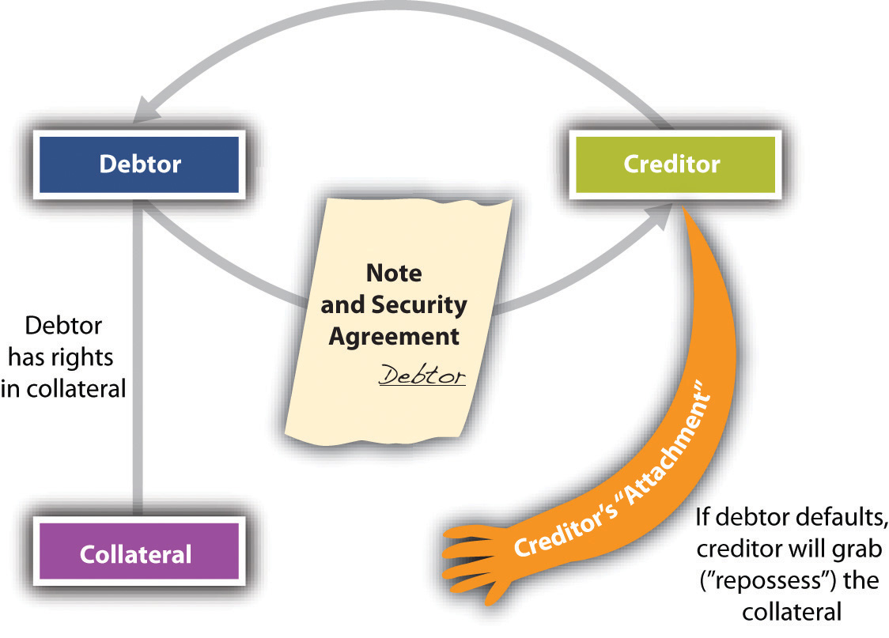
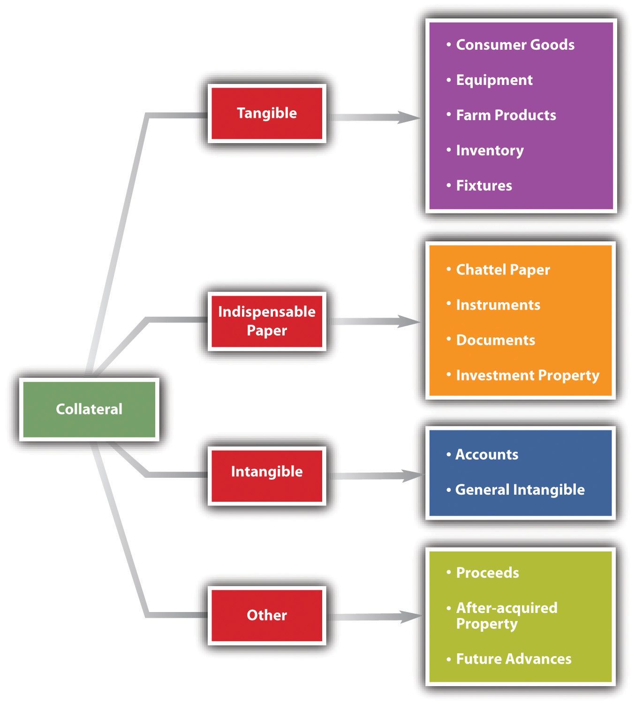
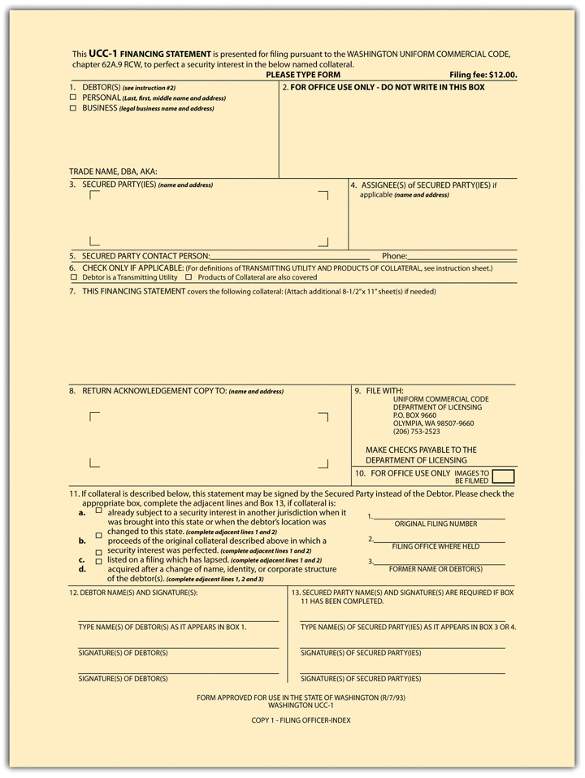
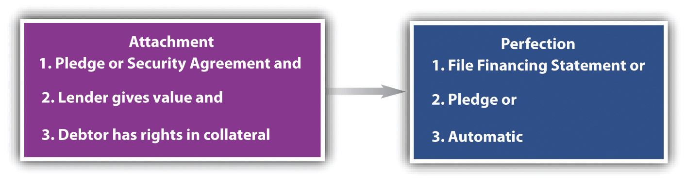

Creditors want assurances that they will be repaid by the debtor. An oral promise to pay is no security at all, and—as it is oral—it is difficult to prove. A signature loanA loan for which no collateral is pledged. is merely a written promise by the debtor to repay, but the creditor stuck holding a promissory note with a signature loan only—while he may sue a defaulting debtor—will get nothing if the debtor is insolvent. Again, that’s no security at all. Real security for the creditor comes in two forms: by agreement with the debtor or by operation of law without an agreement.
Security obtained through agreement comes in three major types: (1) personal property security (the most common form of security); (2) suretyship—the willingness of a third party to pay if the primarily obligated party does not; and (3) mortgage of real estate.
Security obtained through operation of law is known as a lienAn encumbrance upon property to secure payment.. Derived from the French for “string” or “tie,” a lien is the legal hold that a creditor has over the property of another in order to secure payment or discharge an obligation.
In this chapter, we take up security interests in personal property and suretyship. In the next chapter, we look at mortgages and nonconsensual liens.
The law of secured transactions consists of five principal components: (1) the nature of property that can be the subject of a security interest; (2) the methods of creating the security interest; (3) the perfection of the security interest against claims of others; (4) priorities among secured and unsecured creditors—that is, who will be entitled to the secured property if more than one person asserts a legal right to it; and (5) the rights of creditors when the debtor defaults. After considering the source of the law and some key terminology, we examine each of these components in turn.
Here is the simplest (and most common) scenario: Debtor borrows money or obtains credit from Creditor, signs a note and security agreement putting up collateral, and promises to pay the debt or, upon Debtor’s default, let Creditor (secured party) take possession of (repossess) the collateral and sell it. Figure 33.1 "The Grasping Hand" illustrates this scenario—the grasping hand is Creditor’s reach for the collateral, but the hand will not close around the collateral and take it (repossess) unless Debtor defaults.
Figure 33.1 The Grasping Hand
Article 9 of the Uniform Commercial Code (UCC) governs security interests in personal property. The UCC defines the scope of the article (here slightly truncated):Uniform Commercial Code, Section 9-109.
This chapter applies to the following:
As always, it is necessary to review some definitions so that communication on the topic at hand is possible. The secured transaction always involves a debtor, a secured party, a security agreement, a security interest, and collateral.
Article 9 applies to any transaction “that creates a security interest.” The UCC in Section 1-201(35) defines security interestRight in personal property to secure payment or performance of an obligation. as “an interest in personal property or fixtures which secures payment or performance of an obligation.”
Security agreementAgreement that grants a security interest. is “an agreement that creates or provides for a security interest.” It is the contract that sets up the debtor’s duties and the creditor’s rights in event the debtor defaults.Uniform Commercial Code, Section 9-102(a)(73).
CollateralProperty given as security for a debt. “means the property subject to a security interest or agricultural lien.”Uniform Commercial Code, Section 9-102(12).
Purchase-money security interestThe security interest held by the seller of collateral to secure payment of all or part of the price. (PMSI) is the simplest form of security interest. Section 9-103(a) of the UCC defines “purchase-money collateral” as “goods or software that secures a purchase-money obligation with respect to that collateral.” A PMSI arises where the debtor gets credit to buy goods and the creditor takes a secured interest in those goods. Suppose you want to buy a big hardbound textbook on credit at your college bookstore. The manager refuses to extend you credit outright but says she will take back a PMSI. In other words, she will retain a security interest in the book itself, and if you don’t pay, you’ll have to return the book; it will be repossessed. Contrast this situation with a counteroffer you might make: because she tells you not to mark up the book (in the event that she has to repossess it if you default), you would rather give her some other collateral to hold—for example, your gold college signet ring. Her security interest in the ring is not a PMSI but a pledge; a PMSI must be an interest in the particular goods purchased. A PMSI would also be created if you borrowed money to buy the book and gave the lender a security interest in the book.
Whether a transaction is a lease or a PMSI is an issue that frequently arises. The answer depends on the facts of each case. However, a security interest is created if (1) the lessee is obligated to continue payments for the term of the lease; (2) the lessee cannot terminate the obligation; and (3) one of several economic tests, which are listed in UCC Section 1-201 (37), is met. For example, one of the economic tests is that “the lessee has an option to become owner of the goods for no additional consideration or nominal additional consideration upon compliance with the lease agreement.”
The issue of lease versus security interest gets litigated because of the requirements of Article 9 that a security interest be perfected in certain ways (as we will see). If the transaction turns out to be a security interest, a lessor who fails to meet these requirements runs the risk of losing his property to a third party. And consider this example. Ferrous Brothers Iron Works “leases” a $25,000 punch press to Millie’s Machine Shop. Under the terms of the lease, Millie’s must pay a yearly rental of $5,000 for five years, after which time Millie’s may take title to the machine outright for the payment of $1. During the period of the rental, title remains in Ferrous Brothers. Is this “lease” really a security interest? Since ownership comes at nominal charge when the entire lease is satisfied, the transaction would be construed as one creating a security interest. What difference does this make? Suppose Millie’s goes bankrupt in the third year of the lease, and the trustee in bankruptcy wishes to sell the punch press to satisfy debts of the machine shop. If it were a true lease, Ferrous Brothers would be entitled to reclaim the machine (unless the trustee assumed the lease). But if the lease is really intended as a device to create a security interest, then Ferrous Brothers can recover its collateral only if it has otherwise complied with the obligations of Article 9—for example, by recording its security interest, as we will see.
Now we return to definitions.
DebtorOne who owes money or a duty of performance to another. is “a person (1) having an interest in the collateral other than a security interest or a lien; (2) a seller of accounts, chattel paper, payment intangibles, or promissory notes; or (3) a consignee.”Uniform Commercial Code, Section 9-102(a)(28).
ObligorOne who owes an obligation. is “a person that, with respect to an obligation secured by a security interest in or an agricultural lien on the collateral, (i) owes payment or other performance of the obligation, (ii) has provided property other than the collateral to secure payment or other performance of the obligation, or (iii) is otherwise accountable in whole or in part for payment or other performance of the obligation.”Uniform Commercial Code, Section 9-102 (59). Here is example 1 from the Official Comment to UCC Section 9-102: “Behnfeldt borrows money and grants a security interest in her Miata to secure the debt. Behnfeldt is a debtor and an obligor.”
Behnfeldt is a debtor because she has an interest in the car—she owns it. She is an obligor because she owes payment to the creditor. Usually the debtor is the obligor.
A secondary obligor is “an obligor to the extent that: (A) [the] obligation is secondary; or (b) [the person] has a right of recourse with respect to an obligation secured by collateral against the debtor, another obligor, or property of either.”Uniform Commercial Code, Section 9-102(a)(71). The secondary obligor is a guarantor (surety) of the debt, obligated to perform if the primary obligor defaults. Consider example 2 from the Official Comment to Section 9-102: “Behnfeldt borrows money and grants a security interest in her Miata to secure the debt. Bruno cosigns a negotiable note as maker. As before, Behnfeldt is the debtor and an obligor. As an accommodation party, Bruno is a secondary obligor. Bruno has this status even if the note states that her obligation is a primary obligation and that she waives all suretyship defenses.”
Again, usually the debtor is the obligor, but consider example 3 from the same Official Comment: “Behnfeldt borrows money on an unsecured basis. Bruno cosigns the note and grants a security interest in her Honda to secure her [Behnfeldt’s] obligation. Inasmuch as Behnfeldt does not have a property interest in the Honda, Behnfeldt is not a debtor. Having granted the security interest, Bruno is the debtor. Because Behnfeldt is a principal obligor, she is not a secondary obligor. Whatever the outcome of enforcement of the security interest against the Honda or Bruno’s secondary obligation, Bruno will look to Behnfeldt for her losses. The enforcement will not affect Behnfeldt’s aggregate obligations.”
Secured partyThe creditor who has a security interest in a debtor’s collateral. is “a person in whose favor a security interest is created or provided for under a security agreement,” and it includes people to whom accounts, chattel paper, payment intangibles, or promissory notes have been sold; consignors; and others under Section 9-102(a)(72).
Chattel mortgageA security device by which a mortgagee takes security interest in personal property of the mortgagor; mostly superseded by other security arrangements under UCC Article 9. means “a debt secured against items of personal property rather than against land, buildings and fixtures.”Commercial Brokers, Inc., “Glossary of Real Estate Terms,” http://www.cbire.com/index.cfm/fuseaction/terms.list/letter/C/contentid/32302EC3-81D5-47DF-A9CBA32FAE38B22A.
Now we examine what property may be put up as security—collateral. Collateral is—again—property that is subject to the security interest. It can be divided into four broad categories: goods, intangible property, indispensable paper, and other types of collateral.
Tangible property as collateral is goods. Goods means “all things that are movable when a security interest attaches. The term includes (i) fixtures, (ii) standing timber that is to be cut and removed under a conveyance or contract for sale, (iii) the unborn young of animals, (iv) crops grown, growing, or to be grown, even if the crops are produced on trees, vines, or bushes, and (v) manufactured homes. The term also includes a computer program embedded in goods.”Uniform Commercial Code, Section 9-102(44). Goods are divided into several subcategories; six are taken up here.
These are “goods used or bought primarily for personal, family, or household purposes.”Uniform Commercial Code, Section 9-102(a)(48).
“Goods, other than farm products, held by a person for sale or lease or consisting of raw materials, works in progress, or material consumed in a business.”Uniform Commercial Code, Section 9-102(a)(48).
“Crops, livestock, or other supplies produced or used in farming operations,” including aquatic goods produced in aquaculture.Uniform Commercial Code, Section 9-102(a)(34).
This is the residual category, defined as “goods other than inventory, farm products, or consumer goods.”Uniform Commercial Code, Section 9-102(a)(33).
These are “goods that have become so related to particular real property that an interest in them arises under real property law.”Uniform Commercial Code, Section 9-102(a)(41). Examples would be windows, furnaces, central air conditioning, and plumbing fixtures—items that, if removed, would be a cause for significant reconstruction.
These are “goods that are physically united with other goods in such a manner that the identity of the original goods is lost.”Uniform Commercial Code, Section 9-102(a)(1). A new engine installed in an old automobile is an accession.
Two types of collateral are neither goods nor indispensible paper: accounts and general intangibles.
This type of intangible property includes accounts receivable (the right to payment of money), insurance policy proceeds, energy provided or to be provided, winnings in a lottery, health-care-insurance receivables, promissory notes, securities, letters of credit, and interests in business entities.Uniform Commercial Code, Section 9-102(a)(2). Often there is something in writing to show the existence of the right—such as a right to receive the proceeds of somebody else’s insurance payout—but the writing is merely evidence of the right. The paper itself doesn’t have to be delivered for the transfer of the right to be effective; that’s done by assignment.
General intangibles refers to “any personal property, including things in action, other than accounts, commercial tort claims, deposit accounts, documents, goods, instruments, investment property, letter-of-credit rights, letters of credit, money, and oil, gas, or other minerals before extraction.” General intangibles include payment intangibles and software.Uniform Commercial Code, Section 9-102(42).
This oddly named category is the middle ground between goods—stuff you can touch—and intangible property. It’s called “indispensable” because although the right to the value—such as a warehouse receipt—is embodied in a written paper, the paper itself is indispensable for the transferee to access the value. For example, suppose Deborah Debtor borrows $3,000 from Carl Creditor, and Carl takes a security interest in four designer chairs Deborah owns that are being stored in a warehouse. If Deborah defaults, Carl has the right to possession of the warehouse receipt: he takes it to the warehouser and is entitled to take the chairs and sell them to satisfy the obligation. The warehouser will not let Carl have the chairs without the warehouse receipt—it’s indispensable paper. There are four kinds of indispensable paper.
Chattel is another word for goods. Chattel paper is a record (paper or electronic) that demonstrates both “a monetary obligation and a security interest either in certain goods or in a lease on certain goods.”Uniform Commercial Code, Section 9-102(11). The paper represents a valuable asset and can itself be used as collateral. For example, Creditor Car Company sells David Debtor an automobile and takes back a note and security agreement (this is a purchase-money security agreement; the note and security agreement is chattel paper). The chattel paper is not yet collateral; the automobile is. Now, though, Creditor Car Company buys a new hydraulic lift from Lift Co., and grants Lift Co. a security interest in Debtor’s chattel paper to secure Creditor Car’s debt to Lift Co. The chattel paper is now collateral. Chattel paper can be tangible (actual paper) or electronic.
This category includes documents of title—bills of lading and warehouse receipts are examples.
An “instrument” here is “a negotiable instrument (checks, drafts, notes, certificates of deposit) or any other writing that evidences a right to the payment of a monetary obligation, is not itself a security agreement or lease, and is of a type that in the ordinary course of business is transferred by delivery with any necessary indorsement or assignment.” “Instrument” does not include (i) investment property, (ii) letters of credit, or (iii) writings that evidence a right to payment arising out of the use of a credit or charge card or information contained on or for use with the card.Uniform Commercial Code, Section 9-102(a)(47).
This includes securities (stock, bonds), security accounts, commodity accounts, and commodity contracts.Uniform Commercial Code, Section 9-102(a)(49). Securities may be certified (represented by a certificate) or uncertified (not represented by a certificate).Uniform Commercial Code, Section 8-102(a)(4) and (a)(18).
Among possible other types of collateral that may be used as security is the floating lienA lien that is expanded to cover any additional property that is acquired by the debtor while the debt is outstanding.. This is a security interest in property that was not in the possession of the debtor when the security agreement was executed. The floating lien creates an interest that floats on the river of present and future collateral and proceeds held by—most often—the business debtor. It is especially useful in loans to businesses that sell their collateralized inventory. Without the floating lien, the lender would find its collateral steadily depleted as the borrowing business sells its products to its customers. Pretty soon, there’d be no security at all. The floating lien includes the following:
Future advances. Here the security agreement calls for the collateral to stand for both present and future advances of credit without any additional paperwork.
Here are examples of future advances:
See Figure 33.2 "Tangibles and Intangibles as Collateral".
Figure 33.2 Tangibles and Intangibles as Collateral
AttachmentThe process by which a security interest becomes enforceable against the debtor with respect to the collateral. is the term used to describe when a security interest becomes enforceable against the debtor with respect to the collateral. In Figure 33.1 "The Grasping Hand", ”Attachment” is the outreached hand that is prepared, if the debtor defaults, to grasp the collateral.Uniform Commercial Code, Section 9-203(a).
There are three requirements for attachment: (1) the secured party gives value; (2) the debtor has rights in the collateral or the power to transfer rights in it to the secured party; (3) the parties have a security agreement “authenticated” (signed) by the debtor, or the creditor has possession of the collateral.
The creditor, or secured party, must give “value” for the security interest to attach. The UCC, in Section 1-204, provides that
a person gives ‘value’ for rights if he acquires them
(1) in return for a binding commitment to extend credit or for the extension of immediately available credit whether or not drawn upon and whether or not a charge-back is provided for in the event of difficulties in collection; or
(2) as security for or in total or partial satisfaction of a pre-existing claim; or
(3) by accepting delivery pursuant to a pre-existing contract for purchase; or
(4) generally, in return for any consideration sufficient to support a simple contract.
Suppose Deborah owes Carl $3,000. She cannot repay the sum when due, so she agrees to give Carl a security interest in her automobile to the extent of $3,000 in return for an extension of the time to pay. That is sufficient value.
The debtor must have rights in the collateral. Most commonly, the debtor owns the collateral (or has some ownership interest in it). The rights need not necessarily be the immediate right to possession, but they must be rights that can be conveyed.Uniform Commercial Code, Section 9-203(b)(2). A person can’t put up as collateral property she doesn’t own.
The debtor most often signs the written security agreement, or contract. The UCC says that “the debtor [must have] authenticated a security agreement that provides a description of the collateral.…” “Authenticating” (or “signing,” “adopting,” or “accepting”) means to sign or, in recognition of electronic commercial transactions, “to execute or otherwise adopt a symbol, or encrypt or similarly process a record…with the present intent of the authenticating person to identify the person and adopt or accept a record.” The “record” is the modern UCC’s substitution for the term “writing.” It includes information electronically stored or on paper.Uniform Commercial Code, Section 9-102, Official Comment 9. Here is a free example of a security agreement online: Docstoc, “Free Business Templates—Sample Open-Ended Security Agreement,” http://www.docstoc.com/docs/271920/Free-Business-Templates—-Sample-Open-Ended-Security-Agreement.
The “authenticating record” (the signed security agreement) is not required in some cases. It is not required if the debtor makes a pledgeThe delivery of goods to a creditor as security for the debt. of the collateral—that is, delivers it to the creditor for the creditor to possess. For example, upon a creditor’s request of a debtor for collateral to secure a loan of $3,000, the debtor offers up his stamp collection. The creditor says, “Fine, have it appraised (at your expense) and show me the appraisal. If it comes in at $3,000 or more, I’ll take your stamp collection and lock it in my safe until you’ve repaid me. If you don’t repay me, I’ll sell it.” A creditor could take possession of any goods and various kinds of paper, tangible or intangible. In commercial transactions, it would be common for the creditor to have possession of—actually or virtually—certified securities, deposit accounts, electronic chattel paper, investment property, or other such paper or electronic evidence of value.Uniform Commercial Code, Section 9-203(b)(3)(B-D).
Again, Figure 33.1 "The Grasping Hand" diagrams the attachment, showing the necessary elements: the creditor gives value, the debtor has rights in collateral, and there is a security agreement signed (authenticated) by the debtor. If the debtor defaults, the creditor’s “hand” will grab (repossess) the collateral.
As between the debtor and the creditor, attachment is fine: if the debtor defaults, the creditor will repossess the goods and—usually—sell them to satisfy the outstanding obligation. But unless an additional set of steps is taken, the rights of the secured party might be subordinated to the rights of other secured parties, certain lien creditors, bankruptcy trustees, and buyers who give value and who do not know of the security interest. PerfectionThe process by which a secured party announces to the world her secured interest in particular goods. is the secured party’s way of announcing the security interest to the rest of the world. It is the secured party’s claim on the collateral.
There are five ways a creditor may perfect a security interest: (1) by filing a financing statement, (2) by taking or retaining possession of the collateral, (3) by taking control of the collateral, (4) by taking control temporarily as specified by the UCC, or (5) by taking control automatically.
“Except as otherwise provided…a financing statement must be filed to perfect all security agreements.”Uniform Commercial Code, Section 9-310(a).
A financing statementFiling of a notice in the appropriate state office to perfect a security interest. is a simple notice showing the creditor’s general interest in the collateral. It is what’s filed to establish the creditor’s “dibs.”
It may consist of the security agreement itself, as long as it contains the information required by the UCC, but most commonly it is much less detailed than the security agreement: it “indicates merely that a person may have a security interest in the collateral[.]…Further inquiry from the parties concerned will be necessary to disclose the full state of affairs.”Uniform Commercial Code, Section 9-502, Official Comment 2. The financing statement must provide the following information:
The form of the financing statement may vary from state to state, but see Figure 33.3 "UCC-1 Financing Statement" for a typical financing statement. Minor errors or omissions on the form will not make it ineffective, but the debtor’s signature is required unless the creditor is authorized by the debtor to make the filing without a signature, which facilitates paperless filing.Uniform Commercial Code, Section 9-506; Uniform Commercial Code, Section, 9-502, Comment 3.
Figure 33.3 UCC-1 Financing Statement
Generally, the financing statement is effective for five years; a continuation statementAn amendment of a financing statement that identifies, by its file number, the initial financing statement to which it relates and that indicates that it is a continuation statement for, or that it is filed to continue the effectiveness of, the identified financing statement. may be filed within six months before the five-year expiration date, and it is good for another five years.Uniform Commercial Code, Section 9-515. Manufactured-home filings are good for thirty years. When the debtor’s obligation is satisfied, the secured party files a termination statementThe notice from a creditor that the debtor’s obligations are discharged. if the collateral was consumer goods; otherwise—upon demand—the secured party sends the debtor a termination statement.Uniform Commercial Code, Section 9-513.
The UCC also has rules for continued perfection of security interests when the debtor—whether an individual or an association (corporation)—moves from one state to another. Generally, an interest remains perfected until the earlier of when the perfection would have expired or for four months after the debtor moves to a new jurisdiction.Uniform Commercial Code, Section 9-316.
For most real-estate-related filings—ore to be extracted from mines, agricultural collateral, and fixtures—the place to file is with the local office that files mortgages, typically the county auditor’s office.Uniform Commercial Code, Section 9-501. For other collateral, the filing place is as duly authorized by the state. In some states, that is the office of the Secretary of State; in others, it is the Department of Licensing; or it might be a private party that maintains the state’s filing system.Uniform Commercial Code, Section 9-501(a)(2). The filing should be made in the state where the debtor has his or her primary residence for individuals, and in the state where the debtor is organized if it is a registered organization.Uniform Commercial Code, Section 9-307(b). The point is, creditors need to know where to look to see if the collateral offered up is already encumbered. In any event, filing the statement in more than one place can’t hurt. The filing office will provide instructions on how to file; these are available online, and electronic filing is usually available for at least some types of collateral.
Some transactions are exempt from the filing provision. The most important category of exempt collateral is that covered by state certificate of title laws. For example, many states require automobile owners to obtain a certificate of title from the state motor vehicle office. Most of these states provide that it is not necessary to file a financing statement in order to perfect a security interest in an automobile. The reason is that the motor vehicle regulations require any security interests to be stated on the title, so that anyone attempting to buy a car in which a security interest had been created would be on notice when he took the actual title certificate.Uniform Commercial Code, Section 9-303.
The UCC provides that certain types of collateral are automatically perfected but only for a while: “A security interest in certificated securities, or negotiable documents, or instruments is perfected without filing or the taking of possession for a period of twenty days from the time it attaches to the extent that it arises for new value given under an authenticated security agreement.”Uniform Commercial Code, Section 9-312(e). Similar temporary perfection covers negotiable documents or goods in possession of a bailee, and when a security certificate or instrument is delivered to the debtor for sale, exchange, presentation, collection, enforcement, renewal, or registration.Uniform Commercial Code, Section 9-312(f) and (g). After the twenty-day period, perfection would have to be by one of the other methods mentioned here.
A secured party may perfect the security interest by possession where the collateral is negotiable documents, goods, instruments, money, tangible chattel paper, or certified securities.Uniform Commercial Code, Section 9-313. This is a pledge of assets (mentioned in the example of the stamp collection). No security agreement is required for perfection by possession.
A variation on the theme of pledge is field warehousingMortgage arrangement in which a lender secures its loan with a lien on items stored in a warehouse or at the debtor’s place of business, with access to the items controlled by the lender, who releases goods as they are paid for by the borrower.. When the pawnbroker lends money, he takes possession of the goods—the watch, the ring, the camera. But when large manufacturing concerns wish to borrow against their inventory, taking physical possession is not necessarily so easy. The bank does not wish to have shipped to its Wall Street office several tons of copper mined in Colorado. Bank employees perhaps could go west to the mine and take physical control of the copper, but banks are unlikely to employ people and equipment necessary to build a warehouse on the spot. Thus this so-called field pledge is rare.
More common is the field warehouse. The field warehouse can take one of two forms. An independent company can go to the site and put up a temporary structure—for example, a fence around the copper—thus establishing physical control of the collateral. Or the independent company can lease the warehouse facilities of the debtor and post signs indicating that the goods inside are within its sale custody. Either way, the goods are within the physical possession of the field warehouse service. The field warehouse then segregates the goods secured to the particular bank or finance company and issues a warehouse receipt to the lender for those goods. The lender is thus assured of a security interest in the collateral.
“A security interest in investment property, deposit accounts, letter-of-credit rights, or electronic chattel paper may be perfected by control of the collateral.”Uniform Commercial Code, Section 9-314. “Control” depends on what the collateral is. If it’s a checking account, for example, the bank with which the deposit account is maintained has “control”: the bank gets a security interest automatically because, as Official Comment 3 to UCC Section 9-104 puts it, “all actual and potential creditors of the debtor are always on notice that the bank with which the debtor’s deposit account is maintained may assert a claim against the deposit account.” “Control” of electronic chattel paper of investment property, and of letter-of-credit rights is detailed in Sections 9-105, 9-106, and 9-107. Obtaining “control” means that the creditor has taken whatever steps are necessary, given the manner in which the items are held, to place itself in a position where it can have the items sold, without further action by the owner.Uniform Commercial Code, Section 8-106, Official Comment 1.
The fifth mechanism of perfection is addressed in Section 9-309 of the UCC: there are several circumstances where a security interest is perfected upon mere attachment. The most important here is automatic perfectionPerfection by mere attachment. of a purchase-money security interest given in consumer goods. If a seller of consumer goods takes a PMSI in the goods sold, then perfection of the security interest is automatic. But the seller may file a financial statement and faces a risk if he fails to file and the consumer debtor sells the goods. Under Section 9-320(b), a buyer of consumer goods takes free of a security interest, even though perfected, if he buys without knowledge of the interest, pays value, and uses the goods for his personal, family, or household purposes—unless the secured party had first filed a financing statement covering the goods.
Figure 33.4 Attachment and Perfection
A creditor may be secured—allowed to take the debtor’s property upon debtor’s default—by agreement between the parties or by operation of law. The law governing agreements for personal property security is Article 9 of the UCC. The creditor’s first step is to attach the security interest. This is usually accomplished when the debtor, in return for value (a loan or credit) extended from the creditor, puts up as collateral some valuable asset in which she has an interest and authenticates (signs) a security agreement (the contract) giving the creditor a security interest in collateral and allowing that the creditor may take it if the debtor defaults. The UCC lists various kinds of assets that can be collateralized, ranging from tangible property (goods), to assets only able to be manifested by paper (indispensable paper), to intangible assets (like patent rights). Sometimes no security agreement is necessary, mostly if the creditor takes possession of the collateral. After attachment, the prudent creditor will want to perfect the security interest to make sure no other creditors claim an interest in the collateral. Perfection is most often accomplished by filing a financing statement in the appropriate place to put the world on notice of the creditor’s interest. Perfection can also be achieved by a pledge (possession by the secured creditor) or by “control” of certain assets (having such control over them as to be able to sell them if the debtor defaults). Perfection is automatic temporarily for some items (certified securities, instruments, and negotiable documents) but also upon mere attachment to purchase-money security interests in consumer goods.